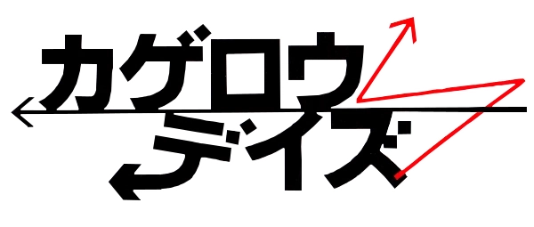

Introduction
The Kagerou Project (カゲロウプロジェクト, Kagerō Purojekuto, lit. "Heat Haze Project"), also known as "Kagerou Daze" (カゲロウデイズ, Kagerō Deizu, lit. "Heat Haze Daze") or "Kagerou Days", is a Japanese mixed-media project. It started as a Vocaloid song series created by Jin (Shizen no Teki-P) (じん(自然の敵P)). The story revolves around the Mekakushi Dan, a group of young people with unusual eye-related powers.
The franchise became infamous on the video sharing website Niconico after the release of the music video and song "Kagerou Daze", which also gave the series its name. The song has amassed over 10 million views and is the most popular song of the project. Eight light novels have been released, written by Jin and illustrated by Sidu (しづ, Shizu). A manga adaptation with illustrations by Mahiro Satou (佐藤まひろ, Satō Mahiro), began serialization in Monthly Comic Gene on June 15, 2012, also written by Jin. A 12-episode anime adaptation titled Mekakucity Actors (メカクシティアクターズ, Mekakushiti Akutāzu, lit. "Blindfold-city Actors")—"Mekakucity" being a portmanteau of "mekakushi" ("blindfold" in Japanese) and "city"—aired between April 12 and June 28, 2014. The series was directed by Akiyuki Shinbo and Yuki Yase, and animated at Shaft, with the script also written by Jin.